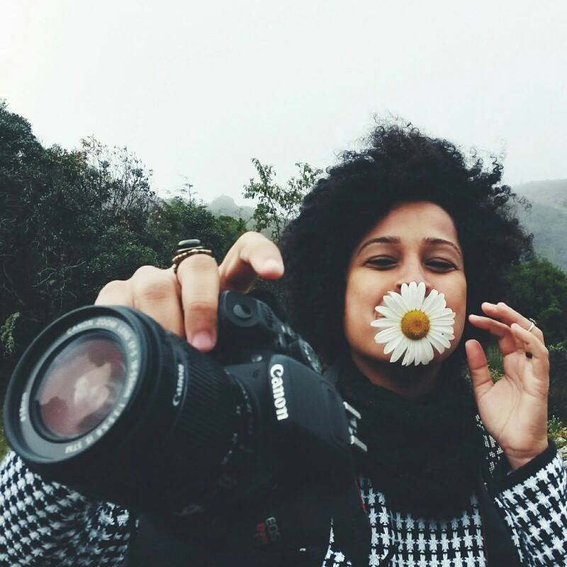
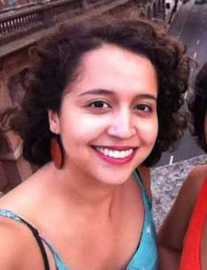

Funções / Fotografia still
As informações de cada perfil são de responsabilidade das profissionais.
Você quer conhecer profissionais de quais estados?
Marcar/Desmarcar todos
CARREGANDO ...
 Amanda Mendes (SP)
Amanda Mendes (SP)
Amanda Mendes
18 anos | Osasco (SP)
amandamendes_almeida@yahoo.com.br
Estudante de comunicação e multimeios na PUC SP, fotografia, feminismo negro, cantora.
Outras atividades de Amanda Mendes
Atuação |
Captação de som |
Cineclubismo |
Cinegrafia |
Correção de cor |
Design gráfico |
Direção |
Direção de arte |
Direção de fotografia |
Edição |
Iluminação |
Maquiagem |
Mixagem e efeitos sonoros |
Produção
Amostra de vídeo
 Ana Carolina M Alho (SP)
Ana Carolina M Alho (SP)
Ana Carolina M Alho
31 anos | Botucatu (SP)
karolkaos@hotmail.com
Sou formada em cinema, atualmente cursando Pós – Graduação/MBA - Comunicação e Marketing em mídias digitais na Estácio previsão de conclusão em 10/2016. Possuo experiência com continuidade, assistência de direção, realização de roteiro, edição e manutenção do cronograma. Supervisão de pessoas, coordenação de atividades e recebimento e distribuição de materiais. Conhecimento em Designer Educacional, atuando com roteirização de vídeo aula. E tenho também experiência com a fotografia still, que umas das minha grandes paixões, com isso incluí a experiência com montagem de estúdio, edição de fotografia e videos. Minhas principais habilidades são: Integridade e coerência, flexibilidade.
Outras atividades de Ana Carolina M Alho
Assistência de Direção |
Continuidade |
Edição |
Produção
Amostra de vídeo
 Anna Paula Furtado (SP)
Anna Paula Furtado (SP)
Anna Paula Furtado
21 anos | São Paulo (SP)
furtadoannapaula@gmail.com
Estou no oitavo semestre da faculdade de Cinema. Dirijo e faço o roteiro do meu TCC, um documentário sobre resistência feminina no Samba. Busco atuar nessas áreas, de cultura popular e questões de gênero e raça. Estou no começo da minha carreira mas sonho grande e não paro quieta, estou sempre à disposição!
Outras atividades de Anna Paula Furtado
Continuidade |
Direção |
Produção |
Roteiro
Amostra de vídeo
 Carine Fiúza (PB)
Carine Fiúza (PB)
Carine Fiúza
27 anos | João Pessoa (PB)
carinefiuza@gmail.com
Graduanda em Rádio e Tv na Universidade Federal da Paraíba e colaboradora no Laboratório Audiovisual de Produção - LAP que integra o departamento de Cinema e Comunicação da UFPB. Concluiu os curso técnicos de Direção, Ass. de direção e Produção executiva pelo CANNE. Atualmente é Produtora, diretora e fotografa freelancer. Ministra cursos livres de cinema e audiovisual. Como diretora elenca os trabalhos: No escuro (2009), Autonomia Mulheres Rurais (2014), Campanha contra lesbofobia (2016); Como produtora: “Capela” (2014), “O Lendário…” (2014), “Ilha” (2014), “Nó do diabo” (2017). Além dos DVDs de “Chico César” para o Canal Brasil e o “Quinteto convida” para Tv UFPB.
https://www.facebook.com/carine.fiuza.3
Outras atividades de Carine Fiúza
Assistência de direção |
Assistência de fotografia |
Cineclubismo |
Coordenação de projeto |
Direção |
Exibição |
Gerência de mídia |
Oficinas e cursos livres |
Pesquisa e desenvolvimento |
Produção
Amostra de vídeo
 Evanize Essi (BA)
Evanize Essi (BA)
Evanize Essi
22 anos | Cachoeira (BA)
evanizeuk@gmail.com
Graduanda em Cinema e Audiovisual pela UFRB, integrante do PET Cinema e do Laboratório de Análise e Criação em Imagem e Som (LACIS). Conselheira suplente do Conselho Municipal de Cultura de Santo Amaro/BA e diretora de projetos na Ápice Empresa Jr. de comunicação.
https://www.facebook.com/focoforcaeflash/
Outras atividades de Evanize Essi
Direção de fotografia |
Edição |
Iluminação
Amostra de vídeo
 Helô França (BA)
Helô França (BA)
Helô França
25 anos | Cachoeira (BA)
heloisa_1106@hotmail.com
Possui Bacharelado em Artes Visuais pela Universidade Federal do Recôncavo da Bahia (UFRB). Fotógrafa, performer, designer e trançadeira. Na fotografia, tem experiência na área do fotojornalismo, em direção de fotografia, no registro de eventos artísticos, shows, peças de teatro, aniversários, seminários, festivais, fóruns e congressos. Sua produção artística atual dialoga com o campo mítico religioso afro-baiano e tem como temática o corpo da mulher negra, enquanto corpo-templo, ancestralidade e fertilidade, envolvendo fotografia, vídeo arte, ilustrações e performance.
Outras atividades de Helô França
Direção de Fotografia |
Oficinas e cursos livres
Amostra de vídeo
Juh Almeida (BA)
Juh Almeida
27 anos | Salvador (BA)
juh.fotografia@gmail.com
Estudo Bacharelado Interdisciplinar em Artes com concentração em Cinema na Universidade Federal da Bahia, artista visual, fotógrafa e filmmaker em constante construção. Por considerar a vida plural, penso que minha personalidade profissional é formatada em vários momentos e em consonância com o tempo. Conectada a toda atividade humana ligada a manifestações de ordem estética ou comunicativa realizada a partir da percepção das emoções e das ideias.
https://vimeo.com/juhalmeida
Outras atividades de Juh Almeida
Assistência de fotografia |
Direção |
Direção de fotografia |
Pesquisa e desenvolvimento
Amostra de vídeo
 Keila Serruya (AM)
Keila Serruya (AM)
Keila Serruya
Manaus (AM)
keilaserruya@gmail.com
Manauara, produtora, artista audiovisual. Formada em comunicação social - Centro Universitário do Norte UNINORTE ( Bolsista integral do Programa Universidade para Todos - ProUni), atualmente cursa Pós Graduação em Gestão Cultural na Universidade Estadual do Amazonas UEA. Diretora de obras audiovisuais “Nessa Cidade Todo Mundo Já Bebeu na Bica” e “ASSIM”, que circularam em festivais nacionais e internacionais e hoje estão sendo exibidas em TV Fechada | Como artista visual traz a linguagem cinematográfica para espaços urbanos, galerias e utiliza a arte como ferramenta política de debate e defesa. Também concebe vídeo instalações para palcos em shows e espetáculos de dança. | Assistente de direção e diretora de produção em séries, curtas, espetáculos, intervenções, festivais e mostras | Atualmente faz parte do grupo Picolé da Massa.
Download Currículo
Outras atividades de Keila Serruya
Assistência de Direção |
Cineclubismo |
Continuidade |
Direção |
Exibição |
Edição |
Pesquisa e desenvolvimento |
Produção
Amostra de vídeo
 Lygia Pereira (SP)
Lygia Pereira (SP)
Lygia Pereira
24 anos | Campinas (SP)
lygiapsc@gmail.com
Graduanda do último semestre do curso de Midialogia na Unicamp, possui experiência em produções audiovisuais (captação de imagem, direção e produção), sobretudo em documentários. Atuou na direção, roteiro e montagem do curta "CEP 05300"; na assistência de produção do documentário "Jogo Truncado", produzido pelo Canal Futura; na co-edição do coletivo de mídia independente Ô, Xavante!. Possui experiência com produção cultural, tendo trabalhado na 7ª Bienal de dança do Sesc de Campinas.
https://lygiapereirablog.wordpress.com/
Outras atividades de Lygia Pereira
Assistência de direção |
Assistência de fotografia |
Continuidade |
Coordenação de projetos |
Direção |
Direção de fotografia |
Edição |
Exibição |
Pesquisa e desenvolvimento |
Produção
Amostra de vídeo
 Marcela Bonfim (RO)
Marcela Bonfim (RO)
Marcela Bonfim
33 anos | Porto Velho (RO)
celabonfim@gmail.com
Fotógrafa, é formada em Ciências Econômicas (2008) pela Pontifícia Universidade Católica de São Paulo (PUC-SP). Especialista em Direitos Humanos e Segurança Pública (2011) pela Fundação Universidade Federal de Rondônia (UNIR), atualmente se dedica ao projeto “(Re)conhecendo a Amazônia Negra: povos, costumes e influências negras na floresta” - projeto de militância e reflexão das artes visuais, no campo da antropologia visual, sobre a constituição e memória da população negra brasileira na região amazônica.
http://www.marcelabonfim.com | http://www.amazonianegra.com
Amostra de vídeo
 Mariani Lima (SP)
Mariani Lima (SP)
Mariani Lima
25 anos | Campinas (SP)
mariani_lima@hotmail.com
Formada em Cinema e Audiovisual na UFPel, atualmente trabalho como cinegrafista e editora freelancer em Campinas. Também sou Audiodescritora certificada.
http://www.vimeo.com/mariani
Outras atividades de Mariani Lima
Assistência de Direção |
Atuação |
Direção |
Direção de Fotografia |
Edição |
Oficinas e cursos livres |
Roteiro
Amostra de vídeo
Marina Kerber (RS/SP)
Marina Kerber
25 anos | Porto Alegre (RS) e São Paulo (SP)
marinatkerber@gmail.com
Mestra em Meios e Processos Audiovisuais na USP. Bacharel em Realização Audiovisual pela UNISINOS. Tem experiência profissional em Cinema, principalmente, como diretora, diretora de arte, figurinista e animadora, tendo experiência em curta-metragens, longa-metragens e videoclipes. Já participou de festivais nacionais e internacionais de cinema, principalmente direcionados às técnicas de animação (Upto3/Canadá, Monstra Festival/Portugal) e ganhou prêmios em festivais como o Festival do Minuto (Recheio de Tinta, Pequena Porção vermelha e Martina) e o 1º Festival Luz de Cinema Latino-americano (Balão Selvagem).
http://be.net/marinakerber
Outras atividades de Marina Kerber
Animação |
Atuação |
Direção |
Direção de arte |
Figurino
Amostra de vídeo
 Naira Evine (AL)
Naira Evine (AL)
Naira Evine
23 anos | Maceió (AL)
naira.nai@gmail.com
"Pós Graduanda em Cinema e Linguagem Audiovisual, comunicóloga formada em Rádio e TV pela UESC. Convive com o mundo da arte desde pequena, com 13 anos aprendeu com seu pai a fotografar e ao longo dos anos foi se profissionalizando na área. Tem experiência profissional em produções audiovisuais, TV, fotografia e docência. É documentarista, diretora , diretora de fotografia, assistente de direção, roteirista, videomaker, editora de imagens e fotógrafa. Entende a grande importância de usar o audiovisual como ferramenta de combate às opressões. Se identifica como mulher negra e lésbica."
Outras atividades de Naira Evine
Direção |
Direção de fotografia |
Edição |
Gerência de mídia
Amostra de vídeo
 Natalie Matos (MG)
Natalie Matos (MG)
Natalie Matos
21 anos | Belo Horizonte (MG)
natalie.m.moura@gmail.com
A única certeza que mora em mim é a de que a cada passo aprendo algo novo e construo minha identidade. Como uma árvore que cresce regada ao amor e às dificuldades, dá bons frutos e flores, mas também amadurece antes da hora e às vezes até mesmo cai, mas, sempre lembra que tudo que se vive fortalece suas raízes. E sempre quando eu precisar vou ao meu interior e discuto comigo, para entender esse meu eu que às vezes recusa falar e prefere apenas sentir. Gradua em Cinema e Audiovisual e Técnico em Artes Visuais, hoje tenho projetos de visibilidade ao protagonismo da mulher preta e a juventude periférica.
http://nataliem-moura.wixsite.com/nataliematos
Outras atividades de Natalie Matos
Animação |
Assistência de Direção |
Captação de Recursos |
Captação de Som |
Cenografia |
Continuidade |
Correção de cor |
Direção |
Direção de Arte |
Direção de Fotografia |
Edição |
Iluminação |
Mixagem e efeitos sonoros |
Pesquisa e desenvolvimento |
Preparação de Elenco |
Produção |
Roteiro
Amostra de vídeo
 Priscila Oliveira (SP)
Priscila Oliveira (SP)
Priscila Oliveira
28 anos | Valinhos (SP)
priscifch@gmail.com
Sou formada em Ciências Sociais e Midialogia, pesquiso direção de criança para cinema no curso Mestrado em Artes da Cena. Minha formação e experiências estão voltadas para roteiro e direção, mas gosto de ampliar meus conhecimentos teóricos e práticos em outras áreas do audiovisual. Também tenho interesse em trabalhos que envolvam o negro e a mulher no cinema (na frente e atrás da câmera), principalmente em relação à construção de personagens.
https://www.facebook.com/ameiavista
Outras atividades de Priscila Oliveira
Assistência de Direção |
Direção |
Ensino superior |
Figurino |
Gerência de Mídia |
Oficinas e cursos livres |
Pesquisa e desenvolvimento |
Preparação de Elenco |
Produção |
Programação e curadoria |
Roteiro
Amostra de vídeo
 Safira Moreira (RJ)
Safira Moreira (RJ)
Safira Moreira
25 anos | Rio de Janeiro (RJ)
safiramoreira1@gmail.com
Safira Moreira é mulher, negra, baiana. Fotógrafa e recém formada em cinema pela Escola de Cinema Darcy Ribeiro (2017) e pelo Centro Afrocarioca de Cinema - Zózimo Bulbul (2016). Formou-se na Escola de Artes Visuais do Parque Lage (RJ) em 2015, mesmo ano em que foi selecionada para a residência artística Afrontrancendence em São Paulo. Dirigiu seu primeiro curta Travessia (2017), premiado como Melhor curta pelo Júri Oficial do Festival CachoeiraDoc (BA), e selecionado para o 1º Encontro Empoderadas (SP). Dirigiu e filmou o videodança Sentinela, selecionada para o Festival Dança em Foco 2017 (CE). Desenvolve mais dois projetos independentes Corpo Veleiro e Um Vestido Para Carolina Maria de Jesus, ambos acerca das vivências e memórias do corpo negro. É fundadora do cineclube Capa Preta, com foco no protagonismo da mulher negra no cinema, realizado no CAPACETE (RJ).
http://cargocollective.com/safiramoreira
Outras atividades de Safira Moreira
Assistência de Fotografia
|
Direção |
Direção de Fotografia
|
Pesquisa e desenvolvimento
Amostra de vídeo
 Sarah Brito (RS)
Sarah Brito (RS)
Sarah Brito
34 anos | Porto Alegre (RS)
sarahbrito@gmail.com
Sarah Brito é documentarista e gestora cultural. Atua com planejamento e gestão cultural, realizando projetos em parceria com o Ministério da Cultura, IPHAN, Instituto Brasileiro de Museus, FUNARTE, Petrobrás, entre outros. Como documentarista seus projetos envolvem o diálogo entre cultura digital, memória e culturas tradicionais, especialmente de matriz afrogaucha. Entre seus trabalhos mais recentes, destaca-se o média-metragem "Batuque Gaúcho". O projeto é vencedor do prêmio Etnodoc, realizado pelo IPHAN com financiamento da Petrobrás, levado ao ar na TV Brasil em 2015. É fundadora da Puro Movimento, organização que provoca diálogo entre cultura e marcas.
http://puromovimento.cc
Outras atividades de Sarah Brito
Captação de Recursos |
Coordenação de Projeto |
Fotografia Still |
Pesquisa e desenvolvimento |
Produção
Amostra de vídeo
 Verônica Honorato (SP)
Verônica Honorato (SP)
Verônica Honorato
26 anos | São Paulo (SP)
veronica.honoratosouza@gmail.com
Meu nome é Verônica e sou formada em Rádio e TV e curso no momento Motion Graphics. Me formei há três anos e comecei a trabalhar com vídeos de gastronomia e cobertura de eventos. No momento, trabalho com vídeos para a comunidade surda. São curtas metragens no formato humorístico e faço parte da equipe de direção de fotografia, edição e animação. Também atuo em alguns vídeos.